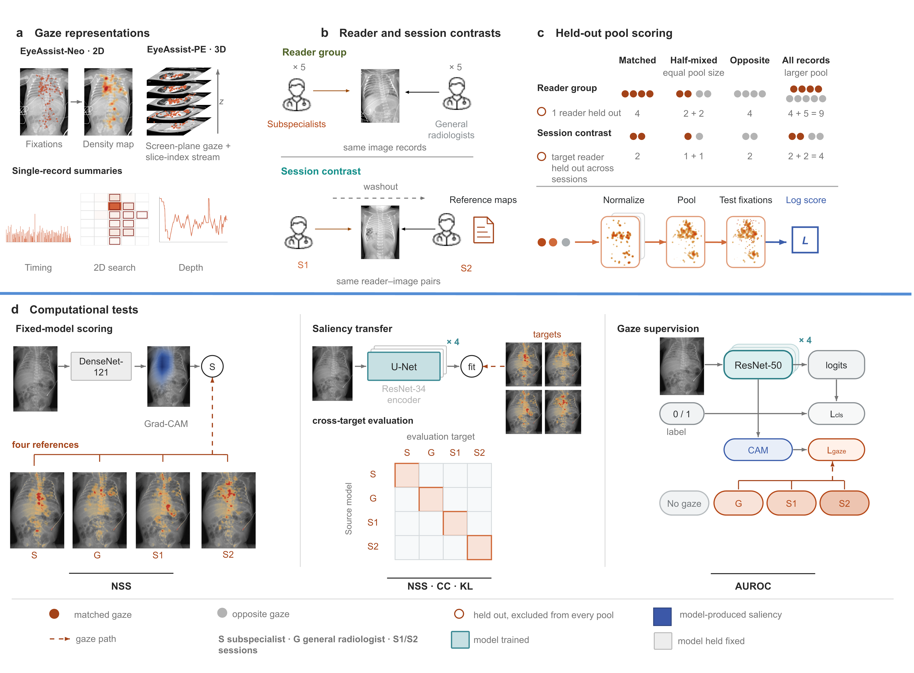
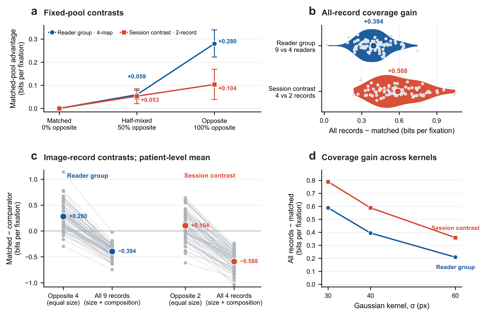
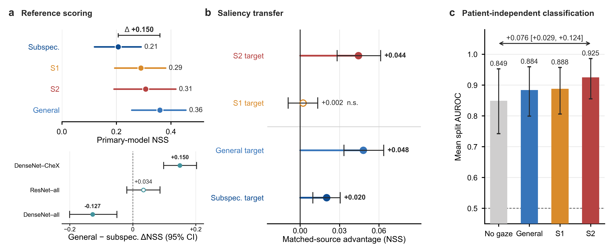
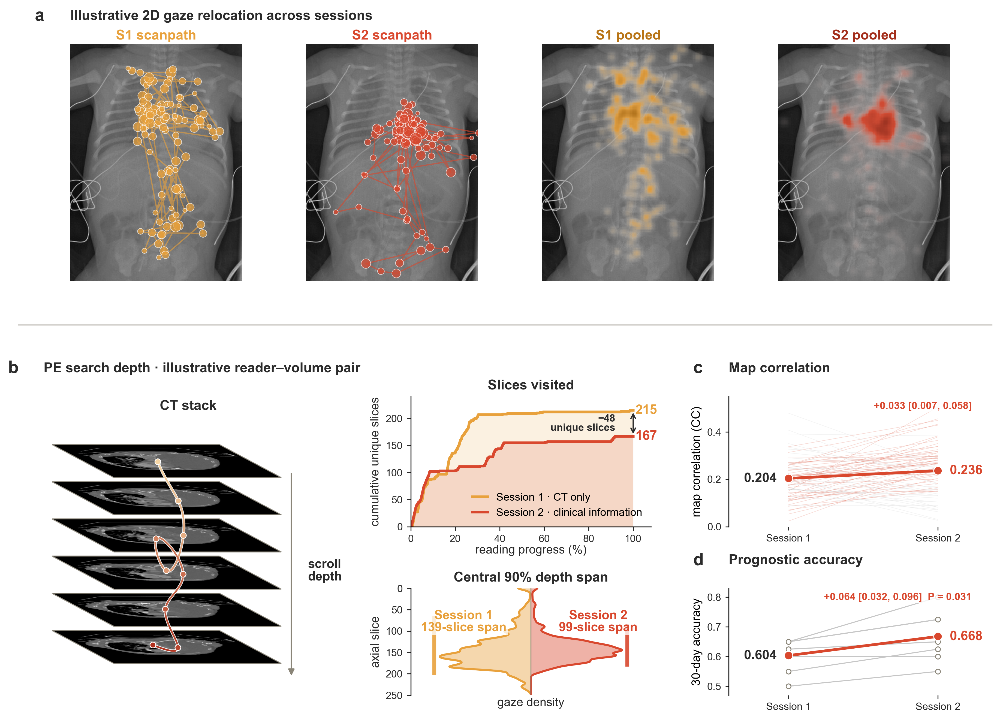

EyeAssist-Neo
75
neonatal-radiograph records
Ten clinical readers support a five-versus-five reader-group contrast; three readers completed paired sessions with and without clinical information.
Nature Machine Intelligence · Manuscript
Reader state shapes supervision targets in medical imaging AI
EyeAssist shows that clinical gaze is not an observer-independent image label. The reader population, task and available clinical information determine the gaze distribution used for evaluation and learning.

EyeAssist overview. Two paired reader studies isolate changes in reader group and reading session while retaining the same image records or volumes.
The central question
Most gaze-guided pipelines ask how gaze should enter a model. EyeAssist asks which recordings should be combined to define the supervision target.
If gaze changes with the reader group, clinical information or task, pooling across these conditions does not merely reduce noise. It creates a different target distribution. We test this with held-out readers, equal-capacity reference pools, fixed-model scoring, saliency transfer and gaze-supervised classification.
Study at a glance
EyeAssist-Neo
75
neonatal-radiograph records
Ten clinical readers support a five-versus-five reader-group contrast; three readers completed paired sessions with and without clinical information.
EyeAssist-PE
40
CT pulmonary angiography volumes
Seven radiologists read each volume twice and judged 30-day survival, yielding a paired 3D session comparison.
Public replication
16
GazeVaLM readers
A separately acquired public cohort tests whether target matching behaves consistently across diagnostic and real-versus-synthetic tasks.
Core evidence

Key results
| Analysis | Comparison | Main result | Interpretation |
|---|---|---|---|
| Spatial gaze | Pediatric subspecialty panel vs general radiologists | 159-pixel median centre-of-mass separation | Reader groups emphasized different image regions. |
| Session gaze | Image only vs clinical information available | 164-pixel within-reader shift | The reading session changed spatial attention. |
| 3D search | EyeAssist-PE paired sessions | Median scroll events fell 34.5% | Six of seven radiologists scrolled less. |
| Task replication | GazeVaLM matched vs opposite task | +0.707 bits for diagnosis; −0.400 for authenticity | The effect of target matching depended on the task. |
| Fixed-model scoring | General-radiologist vs subspecialist reference | +0.150 NSS | The same model received a different alignment score. |

Clinical reading

Reproducibility
The repository provides density-map construction, fixed-pool scoring, patient-cluster inference, saliency and classification model definitions, GazeVaLM analysis, tests and configuration examples.
Clinical images, gaze records, predictions, fitted weights and numerical result files are not distributed in the code repository.
Browse the repository →git clone https://github.com/\
ZhixiangWang-CN/static-gaze-fallacy.git
cd static-gaze-fallacy
conda env create -f environment.yml
conda activate eyeassist-reproducibility
python -m pip install -e '.[dev]'
python -m unittest discover -s tests -v
python examples/synthetic_demo.py \
--output outputs/synthetic_demo